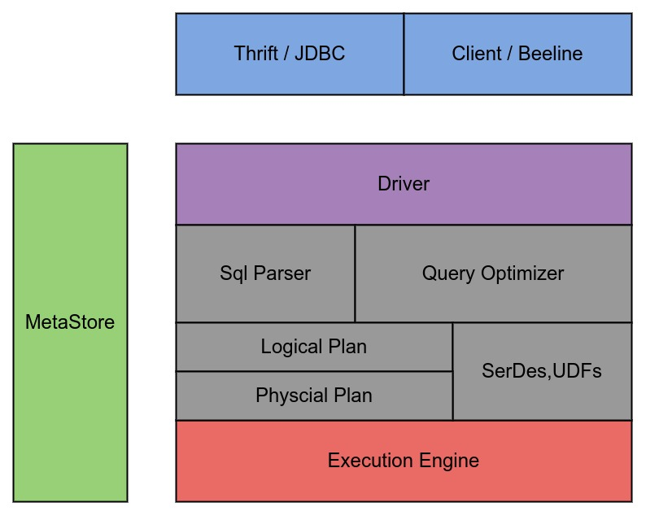
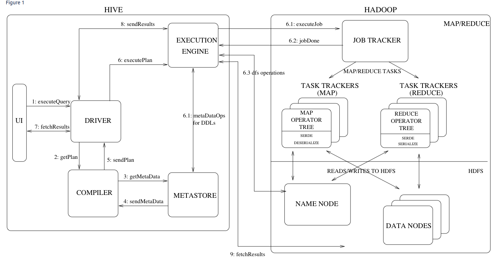

Ch01-Hive 介绍
June 10, 2018
Apache Hive 是基于 Hadoop 的一个数据仓库工具，可以将结构化的数据文件映射为一张数据库表，并提供简单的 SQL 查询功能，其基本原理是将 SQL 语句转换为 MapReduce 任务进行数据处理功能。所以从代码层面来看，整个 Hive 就是将 SQL 语句转换成 MapReduce 代码的一款软件。
1. 基本信息 #
| 条目 | 说明 |
|---|---|
| 官网 | https://hive.apache.org/ |
| 下载地址 | https://hive.apache.org/downloads.html |
2. 架构介绍 #
Hive 由 Hive Server 和 Hive Client 组成。Hive Server 对外提供了 Thrift，JDBC 接口，用户可以自行进行选择使用。Hive Client 比较简单，命令行工具 beeline 是对 thrift 的一层再包装，Client 工具又是对 jdbc 接口的再包装。

2.1 Hive Client #
| 组件 | 说明 |
|---|---|
| JDBC/ODBC | 以 jar 包的形式对外用户使用 |
| Thrift |
2.2 Hive Server #
| 组件 | 说明 |
|---|---|
| Driver | 实现了 session handler，在 JDBC/ODBC 接口上实现了执行和获取信息的 API。 |
| Compiler | 对查询语句做词法解析，语义分析，查询 MetaStore 元数据生成执行计划，借助 RBO/CBO 优化执行计划。 |
| Execution Egine | 提交执行计划到 Yarn、Mesos、Tez 等 |
2.3 Hive MetaStore #
| 组件 | 说明 |
|---|---|
| Database | 存储了表中列和列类型等结构化的信息以及数据仓库中的分区信息，支持使用 Derby，MySQL 等替代 |
| Services | 用于与 Hive Server 交互 |
3. 流程介绍 #
这里以官网文档上的例子来说明下 Hive 各个组件是如何配合完成 DML 操作的。

这张图看起来是比较老旧的，右半边图中的 JOB TRACKER 属于 Hadoop 1.0 时代的组件，自 2.0 开始以 Resource Mananger 替代；同理 TASK TRACKERS 现在已经以 Node Manager 替代。
- 用户提交查询等任务给 Driver。
- Driver 为查询操作创建一个 session handler，接着 dirver 会发送查询操作到 compiler 去生成一个 execute plan
- Compiler 根据用户任务去 MetaStore 中获取需要的 Hive 的元数据信息。这些元数据在后续 stage 中用作抽象语法树的类型检测和修剪。
- Compiler 得到元数据信息，对 task 进行编译，先将 HiveQL 转换为抽象语法树，然后将抽象语法树转换成查询块，将查询块转化为逻辑的查询 plan，重写逻辑查询 plan，将逻辑 plan 转化为物理的 plan（MapReduce）, 最后选择最佳策略（借助 Apache Calcite 完成）。
- 将最终的 plan 提交给 Driver。
- Driver 将 plan 转交给 Execution Engine 去执行，将获取到的元数据信息，提交到 Resource Manager 执行。
- 取得并返回执行结果。